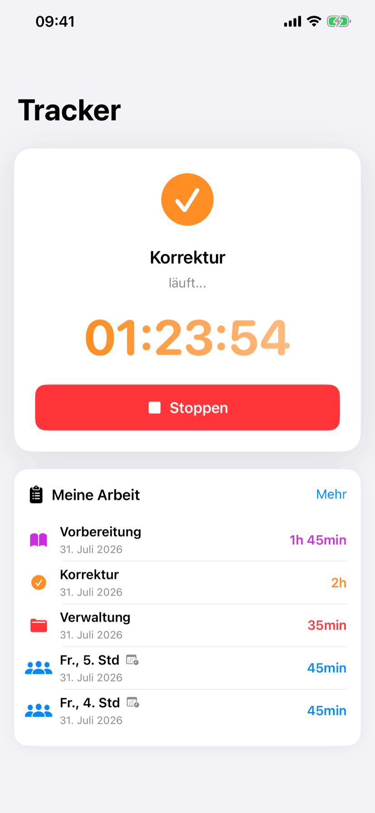
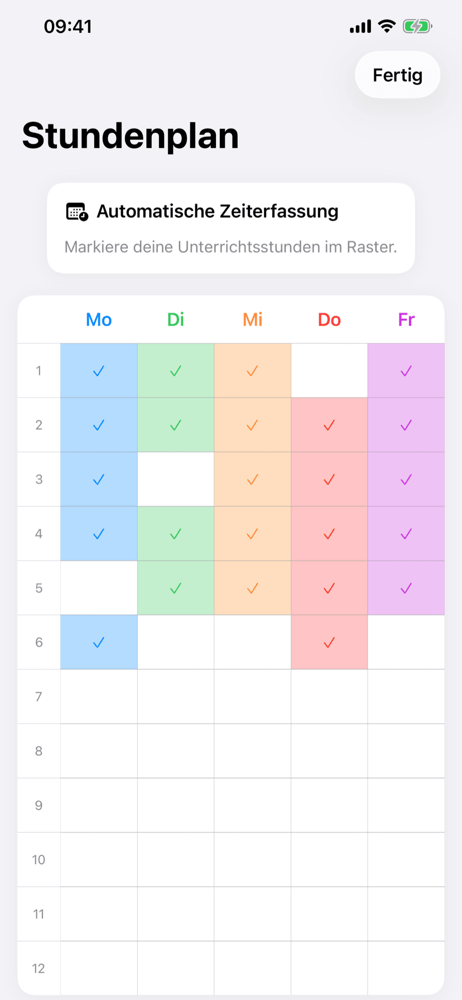
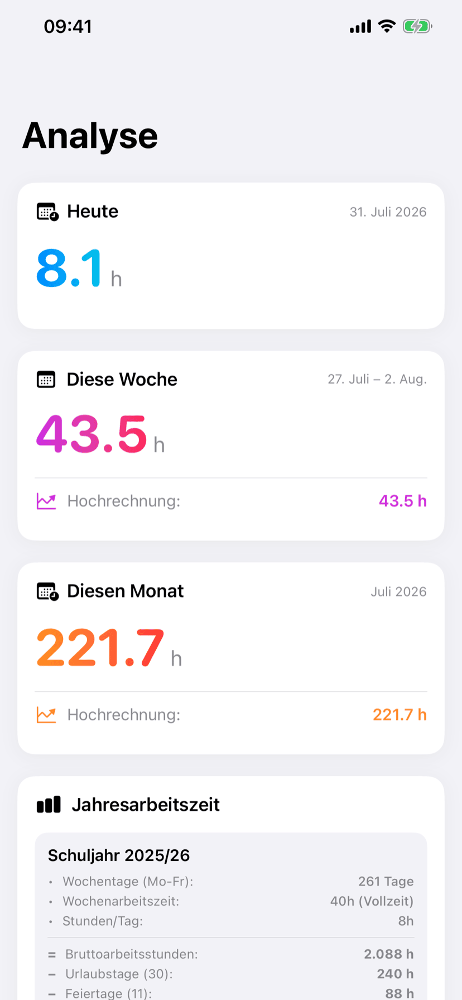
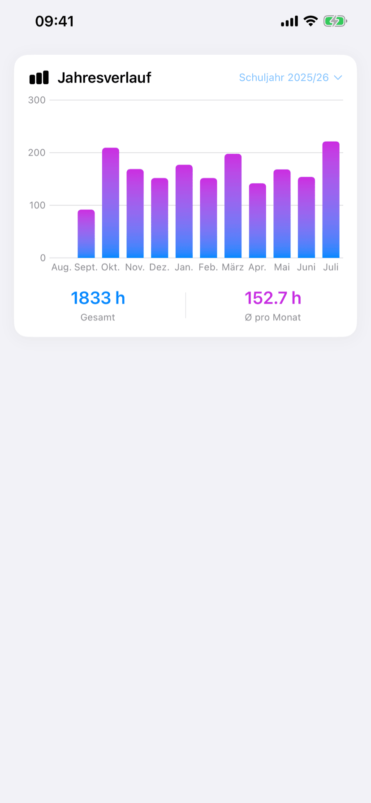
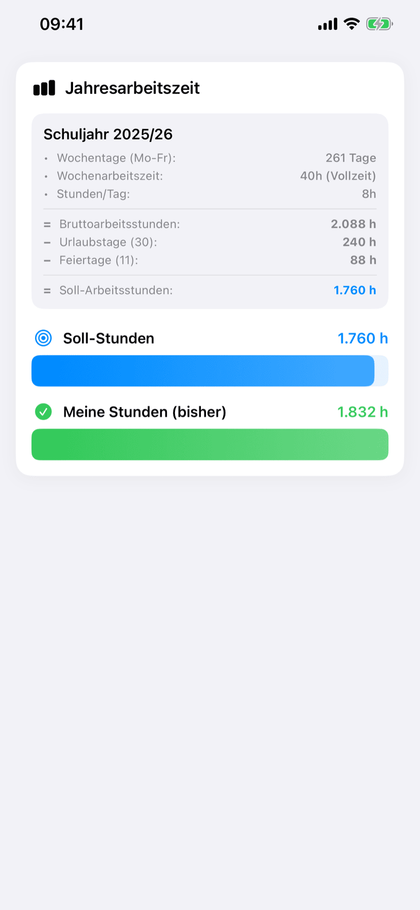
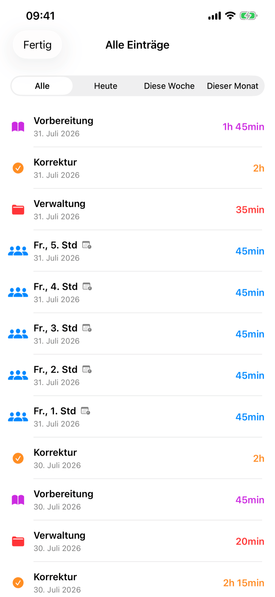
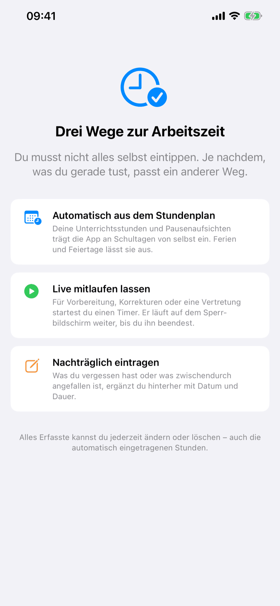

Lehrer Arbeitszeit Tracker
Zeiterfassung für Lehrkräfte, automatisch aus dem Stundenplan.








Zeiterfassung, die sich selbst erledigt.
Automatisch aus dem Stundenplan
Einmal eingetragen, wird jeder Schultag von selbst erfasst.
Timer auf dem Sperrbildschirm
Für Korrektur, Vorbereitung oder Vertretung. Er läuft auf dem Sperrbildschirm weiter.
Soll und Ist im Schuljahr
Deine erfassten Stunden im Vergleich zur Jahresarbeitszeit deiner Stelle.
Alle 16 Bundesländer
Ferien und Feiertage sind hinterlegt, auch offline.
Teilzeit inklusive
Alle Soll-Werte richten sich nach deinem eigenen Deputat.
Privat in deiner iCloud
Ohne Konto und Tracking. iPhone und iPad gleichen sich über iCloud ab.
Die Arbeitszeit von Lehrkräften wird messbar.
EuGH 2019, Bundesarbeitsgericht 2022, Bremen misst seit 2026. Wer seine eigenen Zahlen kennt, muss nicht warten.
Quellen: Arbeitszeitstudien der Kooperationsstelle Hochschulen und Gewerkschaften der Universität Göttingen für Sachsen (2022) und Berlin (2023/24); Prognos AG für das sächsische Kultusministerium (2024/25); Bremer Pilotprojekt ab dem Schuljahr 2026/27.
Wie viel arbeitest du wirklich?
Vier Regler, deine Schätzung. Die App ersetzt sie später durch gemessene Werte.
Ein Schuljahr · 100 % Stelle
Wie wird gerechnet?
- Wochentage im Schuljahr (Mo–Fr)
- 261 Tage
- Wochenarbeitszeit einer vollen Stelle
- 40 h
- Bruttoarbeitsstunden
- 2.088 h
- − Urlaubstage (30)
- 240 h
- − gesetzliche Feiertage (11)
- 88 h
- = Soll bei voller Stelle
- 1.760 h
- × dein Beschäftigungsumfang
- 100 %
Die Hochrechnung nimmt 40 Schulwochen und 12 Ferienwochen an. Dieselbe Formel steckt in der App — dort allerdings mit den Feiertagen deines Bundeslandes statt eines Mittelwerts.
Der Überschlag rechnet mit einer 40-Stunden-Woche, 30 Urlaubstagen und elf Feiertagen. Er ersetzt keine dienstrechtlich verbindliche Auskunft.
Zum Weiterlesen
Häufige Fragen
Ist die App wirklich kostenlos?
Ja, vollständig. Keine In-App-Käufe, kein Abo, keine Pro-Version, keine Werbung. Es gibt keine Funktion, die hinter einer Bezahlschranke liegt.
Wie erfasst die App meine Arbeitszeit automatisch?
Du trägst deinen Stundenplan einmal in ein Raster ein — Unterrichtsstunden und Pausenaufsichten. Ab dann werden diese Zeiten an jedem Schultag von selbst erfasst. Ferien und Feiertage deines Bundeslandes bleiben ausgenommen, weil beides in der App hinterlegt ist.
Wie wird die Soll-Arbeitszeit eines Schuljahres berechnet?
Mit einer 40-Stunden-Woche, 30 Urlaubstagen und den gesetzlichen Feiertagen deines Bundeslandes; das Schuljahr läuft vom 1. August bis zum 31. Juli. Für eine volle Stelle ergibt das rund 1.760 Stunden, bei Teilzeit skaliert der Wert mit deinem Deputat. Das ist eine Orientierung für dich, keine dienstrechtlich verbindliche Auskunft.
Funktioniert die App auch bei Teilzeit?
Ja. Du hinterlegst dein eigenes Deputat, und alle Soll-Werte — Tag, Woche, Monat, Schuljahr — werden entsprechend heruntergerechnet.
Was passiert mit meinen Daten?
Sie bleiben auf deinem Gerät und, wenn du den Abgleich einschaltest, in deiner eigenen privaten iCloud. Es gibt kein Benutzerkonto, keine Anmeldung, keine Werbung und keine Analyse-Dienste. Außer der iCloud-Verbindung stellt die App überhaupt keine Netzwerkverbindung her — auch Ferientermine werden nicht abgerufen, sondern sind mitgeliefert.
Gleicht die App zwischen iPhone und iPad ab?
Ja, über iCloud: Einträge, Stundenplan und Einstellungen. Startest du einen Timer auf dem einen Gerät, siehst du ihn auf dem anderen.
Für welche Bundesländer sind Ferien und Feiertage hinterlegt?
Für alle 16. Die Ferientermine reichen bis zum Schuljahr 2029/30, die Feiertage werden berechnet. Beides funktioniert deshalb auch im Flugmodus.
Ersetzt die App eine dienstliche Zeiterfassung?
Nein. Sie ist ein persönliches Werkzeug für deine eigene Übersicht. Wo dein Land eine dienstliche Erfassung vorschreibt, gilt weiterhin deren System.
Ein Schuljahr lang mitschreiben.
Am 31. Juli steht dann eine belastbare Zahl.